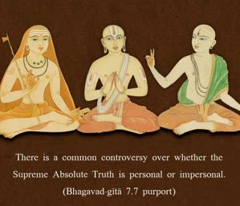

O conqueror of wealth, there is no truth superior to Me. Everything rests upon Me, as pearls are strung on a thread.

There is a common controversy over whether the Supreme Absolute Truth is personal or impersonal. As far as Bhagavad-gītā is concerned, the Absolute Truth is the Personality of Godhead, Śrī Kṛṣṇa, and this is confirmed in every step. In this verse, in particular, it is stressed that the Absolute Truth is a person. That the Personality of Godhead is the Supreme Absolute Truth is also the affirmation of the Brahma-saṁhitā: īśvaraḥ paramaḥ kṛṣṇaḥ sac-cid-ānanda-vigrahaḥ; that is, the Supreme Absolute Truth Personality of Godhead is Lord Kṛṣṇa, who is the primeval Lord, the reservoir of all pleasure, Govinda, and the eternal form of complete bliss and knowledge. These authorities leave no doubt that the Absolute Truth is the Supreme Person, the cause of all causes. The impersonalist, however, argues on the strength of the Vedic version given in the Śvetāśvatara Upaniṣad (3.10): tato yad uttara-taraṁ tad arūpam anāmayam/ ya etad vidur amṛtās te bhavanti athetare duḥkham evāpiyanti. “In the material world Brahmā, the primeval living entity within the universe, is understood to be the supreme amongst the demigods, human beings and lower animals. But beyond Brahmā there is the Transcendence, who has no material form and is free from all material contaminations. Anyone who can know Him also becomes transcendental, but those who do not know Him suffer the miseries of the material world.”
The impersonalist puts more stress on the word arūpam. But this arūpam is not impersonal. It indicates the transcendental form of eternity, bliss and knowledge as described in the Brahma-saṁhitā quoted above. Other verses in the Śvetāśvatara Upaniṣad (3.8–9) substantiate this as follows:
vedāham etaṁ puruṣaṁ mahāntam
āditya-varṇaṁ tamasaḥ parastāt
tam eva viditvāti mṛtyum eti
nānyaḥ panthā vidyate ’yanāya
yasmāt paraṁ nāparam asti kiñcid
yasmān nāṇīyo no jyāyo ’sti kiñcit
vṛkṣa iva stabdho divi tiṣṭhaty ekas
tenedaṁ pūrṇaṁ puruṣeṇa sarvam
“I know that Supreme Personality of Godhead who is transcendental to all material conceptions of darkness. Only he who knows Him can transcend the bonds of birth and death. There is no way for liberation other than this knowledge of that Supreme Person.
“There is no truth superior to that Supreme Person, because He is the supermost. He is smaller than the smallest, and He is greater than the greatest. He is situated as a silent tree, and He illumines the transcendental sky, and as a tree spreads its roots, He spreads His extensive energies.”
From these verses one concludes that the Supreme Absolute Truth is the Supreme Personality of Godhead, who is all-pervading by His multi-energies, both material and spiritual.